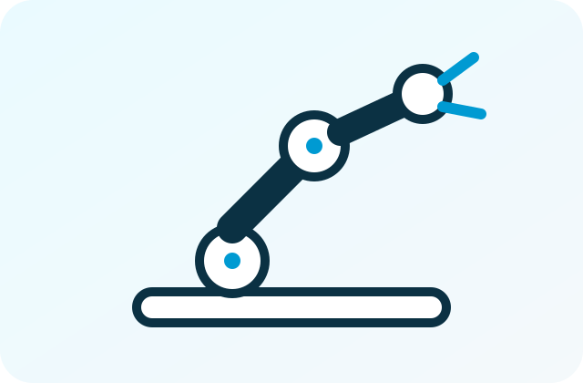

TIANJI / MOBILE MANIPULATION
Tianji Marvinを、
VLA・双腕テレオペ研究へ。
双腕力制御、全方向移動、ロボットテレオペ、HDF5・RLDS記録を組み合わせるデータ収集候補として、構成、価格、納期、提供範囲を確認します。

SYSTEM POSITION
機体単体ではなく、収集系全体で判断。
ロボット本体
双腕、ハンド、力制御、全方向移動、センサー構成を確認。
テレオペ
VR、データグローブ、マスター装置、操作遅延、対応軸を確認。
記録・同期
画像、状態、行動、力覚、タイムスタンプ、欠損管理を整理。
学習・評価
HDF5、RLDS、変換、再生、成功・失敗ラベル、品質評価を設計。
SUITABLE RESEARCH
適した研究・開発用途。
VLA・模倣学習
観測・行動データを収集し、学習・再生・評価へ接続。
双腕力制御
接触作業、協調操作、力覚を伴うManipulation研究。
ロボットテレオペ
VR、データグローブ等を利用した遠隔操作構成。
移動操作
全方向移動と双腕を組み合わせた長尺タスク収集。
CHECK POINTS
Tianji Marvinの構成・価格・データ条件。
| 双腕・ハンド | 自由度、可搬、力制御、末端ツール、交換条件を確認。 |
|---|---|
| 移動ベース | 全方向移動、速度、床面、停止精度、安全条件を確認。 |
| テレオペ | VR、データグローブ、マスター装置、対応軸、操作遅延を確認。 |
| データ形式 | HDF5、RLDS、画像・状態・行動同期、変換要否を確認。 |
| SDK・API | 制御対象、通信、OS、記録API、外部センサー連携を確認。 |
| 価格・納期 | 本体、双腕、ハンド、周辺機器、予備部品、輸送、設定を含め確認。 |
| 保証・支援 | メーカー保証、初期不良、修理、一次切り分け、追加開発を分離。 |
FAQ
よくある確認。
RELATED INFORMATION
関連する支援・資料。
公開資料上の構成と、実際に見積・提供できる構成は同じとは限りません。標準機能、オプション、個別開発、周辺機器を分けて確認します。